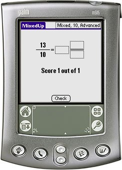

MixedUp is a simple learning tool. In MixedUp you must convert fractions to mixed numbers or vice versa. For each correct conversion you score 1 point.
MixedUp is primarily meant for pupils in the lower grades. MixedUp was created as a response to the wishlist found at: http://www.mpsomaha.org/willow/technology/wishlist.html.
MixedUp is released under the GNU General Public License v2 and requires Palm OS 3.0 or better.
You can support this project by donating any amount to my Pay Pal account.
You can get Angles, LcmGcf, MathAce, MixedUp, PowerPlay and Simplify in one Bundle.
v1r1 (2005-04-01) First release of MixedUp.